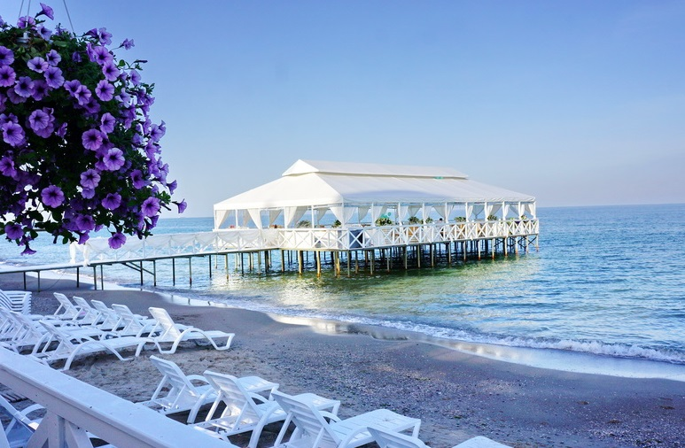

Odessa history |
|
| &cop Oleg M. | Rus launher |
| A source Odessa beaches | |
|
Odessa , in Ukrainian Odesa is a city in the south of Ukraine. The administrative center of the Odessa region and the only naval base of the Naval Forces of Ukraine. Hero City
The third largest city in the country. The population of the city on January 1, 2018 was 993,831 permanent residents and 1,011,494 people of the present population . More than 1.2 million people live within the metropolitan area. The national composition of the population: 61.7% of Ukrainians, 29.0% of Russians, 1.3% of Bulgarians, 1.2% of Jews (2001) [6] [not in the source]. Located on the shore of the Odessa Bay of the Black Sea.
The largest sea trading port of Ukraine. Trade, metalworking, oil refining, mechanical engineering, the production of drugs and food are developed. Spa treatment and beach holidays, cruise tourism. Large scientific and educational center.
The historic center is listed on the UNESCO World Heritage List. The ensemble of Primorsky Boulevard, Duke de Richelieu Square and the Potemkin Stair
From the V century BC. er - a group of ancient settlements. The modern city as a naval port on the Black Sea was founded by the Russian Empire in 1794 on the site of the Tatar-Turkish settlement Hadzhibey (known, according to the hypothesis of A. Markevich, from the XV century), which ceded to Russia in 1791; renamed Odessa (presumably from the ancient city of Odessos) in 1795. By the end of the 19th century, Odessa had become the fourth largest city in terms of population and the second largest cargo port of the Russian Empire.
For the first time the new name of the city is found on January 10 , 1795
The name is associated with the ancient Greek colony Odessos (ancient Greek Ὀδησσός). At the end of the 18th century, it was a tradition to call cities in the territories conquered by the Turks by Greek names (for example, Sevastopol, Tiraspol, etc., including with the reproduction of ancient names, not necessarily in the same place - Kherson). In those years it was assumed that the ancient Odessos existed near the Gulf of Odessa (later archaeologists found this colony near the Bulgarian city of Varna).
Another option is etymological. According to one legend, the result of the royal debates about the lack of fresh water in the vicinity of the site chosen for construction by the name of the city, by the will of Empress Catherine II, was the French expression “assez d’eau” (“assedo” - there is enough water) read in the Russian transcription. This version of scientific historiography is rejected [8].
Odessa has its own coat of arms, flag, anthem, which reflect the status of the city
The modern coat of arms of Odessa is a silver river anchor with four paws in a scarlet field. The shield on the coat of arms is located in a golden cartouche and is crowned with a golden city crown, under which the outline of a five-pointed star is depicted, approved on June 29, 1999. The city received a coat of arms depicting a cat anchor as long as it belonged to the Russian Empire; then a double-headed eagle was depicted in the upper half of the shield. The first Emblem of Odessa was approved on April 22, 1798. "In the upper golden part of the shield arises the state eagle, in the lower part of the scarlet is a silver anchor." Since the emblem of Odessa was affirmed under Paul I, the Russian eagle in the upper half of the shield was depicted of “Pavlov type” - with a Maltese cross on its chest.
The flag of the city is a rectangular panel with the emblem in the center, divided vertically into three parts - red, white and orange. The latest version of the flag was approved on April 29, 2011.
For a long time, the unofficial hymn of the city was the Song of Odessa. The draft city charter, submitted for public discussion on June 14, 2011, proposed the song “At the Black Sea” by Leonid Utyosov as Odessa’s hymn [54]. On August 25, 2011, the Charter of the territorial community of the city of Odessa was approved , registered on October 7, 2011 by the justice authorities [57] and according to paragraph 2 of clause 1 of Article 5, the official hymn of the city is the Song of Odessa from the operetta I. O. Dunaevsky "White Acacia"
Odessa is the largest seaport of Ukraine , transporting grain, sugar, coal, petroleum products, cement, metals, jute, wood, products of the engineering industry. Base naval (since 2014) and the fishing fleet. Large railway center. The main industries are oil processing, mechanical engineering, metalworking, light, food, woodworking, agricultural and chemical industries.
Another peculiar "attraction" of Odessa is the 7th kilometer industrial and clothing market (the official name is Avangard; the colloquial name is Push, Seventh or Semyk, which is the largest shopping mall in Eastern Europe kind of [65].
According to the version of the most mentioned annual rating of the magazine "Focus" in
Material taken from wikipedia |
Odessa beaches |
|
Top beaches in Odessa
Among the beaches are the following: "Luzanovka" in the residential massif. Kotovsky; beaches along Health Trails ": "Langeron" in the park to them. T. G. Shevchenko, since 2005, the largest year-round dolphinarium and the Nemo Aquarium has been operating next to it; "Joy" in the street. Pirogovskaya; "Dolphin" in the area of Champagne Lane; "Arcadia" - one of the business cards of the city. Unlike most other beaches, a gentle and comfortable descent leads to Arcadia; beaches along the Fontannaya Road, stretching from the 8th to the 16th station of the Big Fountain - from the Chayka beach to the Gold Coast beach; the beach "Chernomorka", located in the village of Chernomorka, now again Lustdorf, part of the Kiev district of Odessa. This beach is outside the Gulf of Odessa.  |
|